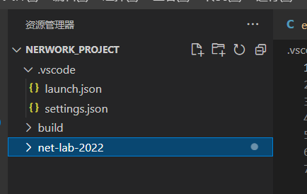
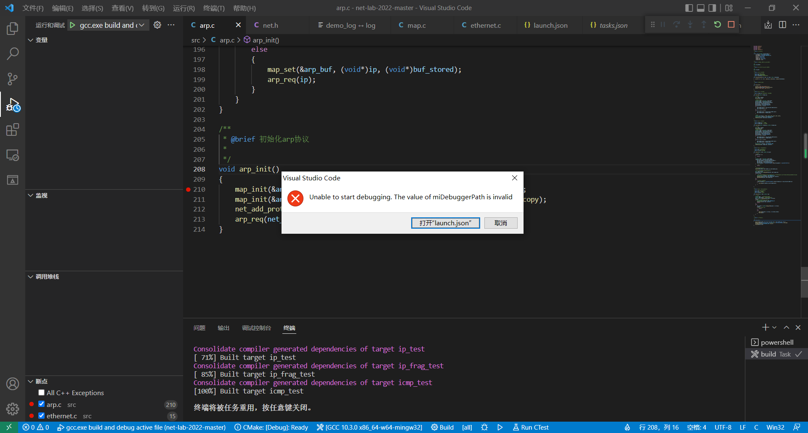

2. Lab2 常见问题（Eth）
2.1. 进行环境配置时，选择编译器后报错？
如下图所示

解决方案： 当前根目录下（即你通过VSCode的打开文件夹功能打开的文件夹）缺少“.code-workspace”文件，需要点击“文件”->“将工作区另存为”，见下图.

然后工作区就会出现“.code-workspace”文件，见下图

打开“.code-workspace”文件，然后在settings中添加配置： “cmake.generator”: “MinGW Makefiles”

2.2. 安装完CMAKE和TDM GCC后，VSCode的CMAKE上找不到项目的可执行程序？
如下图所示，找不到项目的可执行程序。

首先，你需要先检查 “C:\Users\你自己电脑的用户名\AppData\Local\CMakeTools\CMakeTools-tools-kits.json”文件，该文件正常的配置应该如下图所示。

1[
2 {
3 "name": "GCC 10.3.0 x86_64-w64-mingw32",
4 "compilers": {
5 "C": "C:\\TDM-GCC-64\\bin\\x86_64-w64-mingw32-gcc.exe",
6 "CXX": "C:\\TDM-GCC-64\\bin\\x86_64-w64-mingw32-g++.exe"
7 },
8 "preferredGenerator": {
9 "name": "MinGW Makefiles"
10 },
11 "environmentVariables": {
12 "CMT_MINGW_PATH": "C:\\TDM-GCC-64\\bin"
13 }
14 }
15]
如果你电脑中该文件的gcc不一样，比如是C:\TDM-GCC-64\bin\gcc.exe。你可以参考以下步骤来修改：
单击VSCode的左下角齿轮图标，选择“设置”。

在弹出的窗口中输入“cmake generator”，然后在“Cmake: Generator 要使用的CMake生成器”中输入“MinGW Makefiles”，将Cmake生成器强制指定为MinGW Makefiles。

点击VSCode最下方的“GCC图标”，重新扫描[Scan for kits]，重新选择GCC，应该选择的是C:\TDM-GCC-64\bin\x86_64-w64-mingw32-gcc.exe。

如果还不行，删掉本工程目录下的.vscode\settings.json文件，再重新扫描[Scan for kits]。
2.3. CMake报错
CMake报错的情况以下几种情况：
1、首先参考上一题的解决方案，先确保GCC是选对了。
2、检测一下你的工程目录是不是实验包的根目录。
正常的VSCode工程目录应该是这样的：

下图的工程目录是不对的：
同学们可以自行检查。
2.4. ctest运行报错
如果出现下图的情况，一般是代码有段错误了，可以用GDB跟踪调试。

2.5. 能用CMAKE编译，不能用GDB调试？
本题的解决方法来源于某位同学的分享，非常感谢这位乐于分享的同学！
如下图，能编译，但GDB调试不了。
该同学的GCC安装在D:/program Files (x86)/TDM-GCC-64/目录下。

解决方法：
将TDM-GCC-64卸载后，重新安装到C盘默认目录下，然后重新clone代码，再按照指导书给出的步骤来配置，整个环境就没有问题了。
如果你也是碰到能编译，不能GDB调试的问题，你不妨尝试一下该方法。